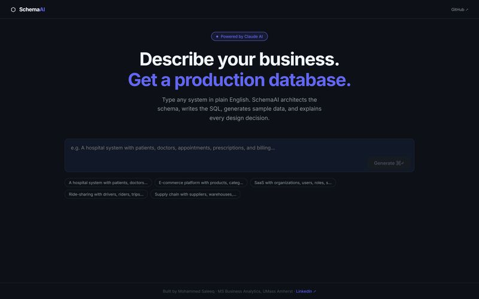
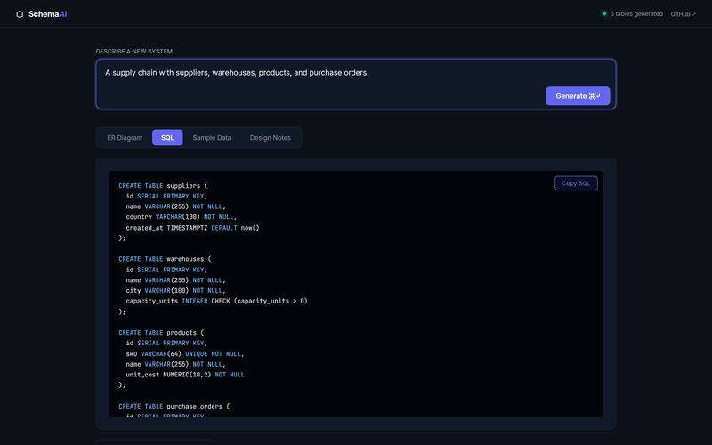
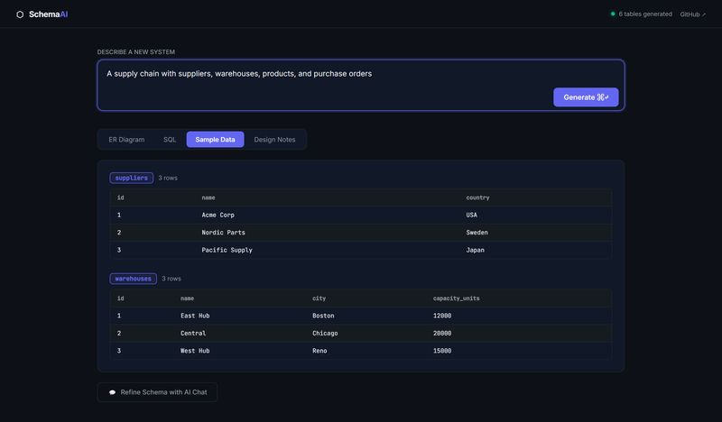
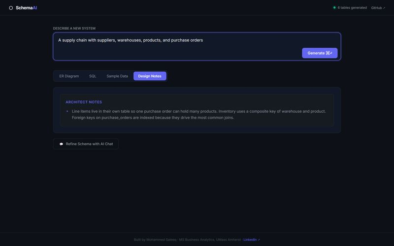

SchemaAI
AI product · Claude API
Describe a business in plain English. Get a production database.

- Role
- Solo builder: product, backend, frontend
- When
- 2026
- Stack
- React 18, Vite, FastAPI, Pydantic v2, Claude API
- Output
- PostgreSQL schema
Results
Generation time is from the project README. The ER renderer is hand-written SVG.
Turning a business idea into a clean relational schema takes real design skill and a lot of hand-written SQL. It's where many analysts and founders get stuck.
- One sentence in, a normalized schema out
- SQL that runs, not pseudo-code
- Explain the design so people learn from it
- Change it without starting over
How I built it.
- 01
Validate input
Pydantic v2 validators clean every request before it reaches the model.
- 02
Ask for structure
I prompt Claude for strict JSON covering tables, keys, relationships, SQL, sample rows and the reasoning behind them.
- 03
Check the output
Models don't always follow instructions, so the backend strips stray code fences and checks the structure first.
- 04
Draw the diagram
I wrote the ER renderer in plain SVG. No diagram library.
- 05
Refine by chat
Ask for a returns table or soft deletes. I keep the last 8 turns of history so context stays lean.
- 06
Track changes
Every change made through chat lands in a change log next to the design notes.
Under the hood.
Inside the product.
Click any image to enlarge.




What I learned
- Asking a model for strict JSON isn't enough. Checking the structure on the server is what makes it dependable.
- Drawing the diagram myself kept the app light and gave me full control of the layout.
What's next
- I want to stream responses so big schemas appear as they're built
Screens show the real interface with a sample schema loaded for illustration.